Θέμα 145 (Seq 1)
Σύνολο πινάκων: 3
Η οικογενής σπαστική παραπληγία συνήθως προκαλεί
📋 ΠΙΝΑΚΑΣ / ΣΧΗΜΑ (M3_Q145_TAB_01.png)

M3_Q145_TAB_01.png
📋 ΠΙΝΑΚΑΣ / ΣΧΗΜΑ (M3_Q145_TAB_02.png)
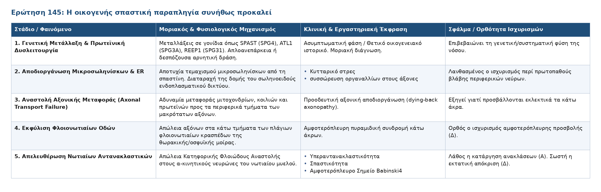
M3_Q145_TAB_02.png
📋 ΠΙΝΑΚΑΣ / ΣΧΗΜΑ (M3_Q145_TAB_03.png)

M3_Q145_TAB_03.png
Θέμα 146 (Seq 2)
Σύνολο πινάκων: 3
Καλπαστικό βάδισμα έχουμε σε
📋 ΠΙΝΑΚΑΣ / ΣΧΗΜΑ (M3_Q146_TAB_01.png)

M3_Q146_TAB_01.png
📋 ΠΙΝΑΚΑΣ / ΣΧΗΜΑ (M3_Q146_TAB_02.png)

M3_Q146_TAB_02.png
📋 ΠΙΝΑΚΑΣ / ΣΧΗΜΑ (M3_Q146_TAB_03.png)
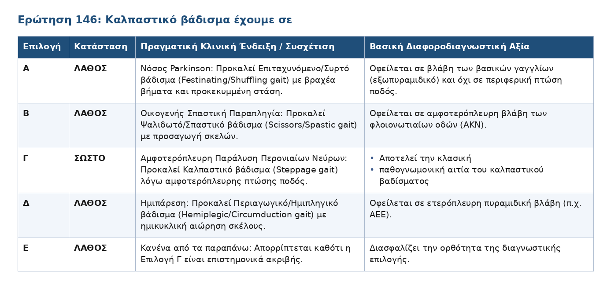
M3_Q146_TAB_03.png
Θέμα 146 (Seq 3)
Σύνολο πινάκων: 3
Καλπαστικό βάδισμα έχουμε σε
📋 ΠΙΝΑΚΑΣ / ΣΧΗΜΑ (M3_Q146B_TAB_01.png)

M3_Q146B_TAB_01.png
📋 ΠΙΝΑΚΑΣ / ΣΧΗΜΑ (M3_Q146B_TAB_02.png)
M3_Q146B_TAB_02.png
📋 ΠΙΝΑΚΑΣ / ΣΧΗΜΑ (M3_Q146B_TAB_03.png)

M3_Q146B_TAB_03.png
Θέμα 147 (Seq 4)
Σύνολο πινάκων: 3
Καλπαστικό βάδισμα έχουμε σε
📋 ΠΙΝΑΚΑΣ / ΣΧΗΜΑ (M3_Q147_TAB_01.png)

M3_Q147_TAB_01.png
📋 ΠΙΝΑΚΑΣ / ΣΧΗΜΑ (M3_Q147_TAB_02.png)
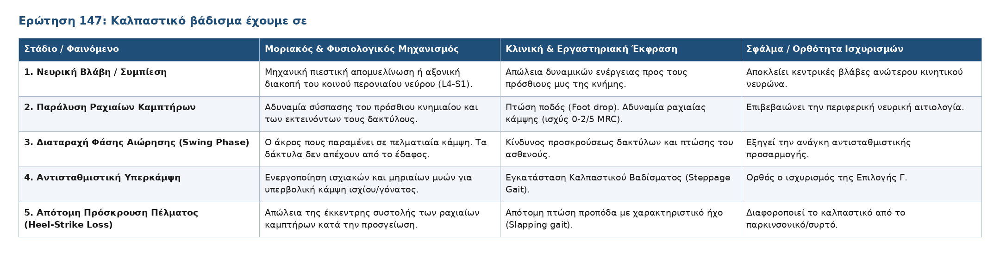
M3_Q147_TAB_02.png
📋 ΠΙΝΑΚΑΣ / ΣΧΗΜΑ (M3_Q147_TAB_03.png)

M3_Q147_TAB_03.png
Θέμα 148 (Seq 5)
Σύνολο πινάκων: 3
Το τενόντιο αντανακλαστικό του δικεφάλου ελέγχεται από
📋 ΠΙΝΑΚΑΣ / ΣΧΗΜΑ (M3_Q148_TAB_01.png)
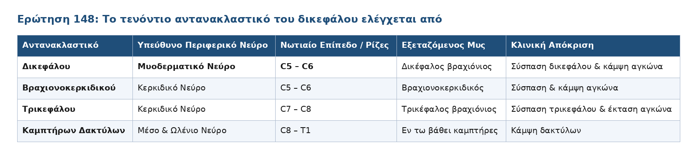
M3_Q148_TAB_01.png
📋 ΠΙΝΑΚΑΣ / ΣΧΗΜΑ (M3_Q148_TAB_02.png)

M3_Q148_TAB_02.png
📋 ΠΙΝΑΚΑΣ / ΣΧΗΜΑ (M3_Q148_TAB_03.png)
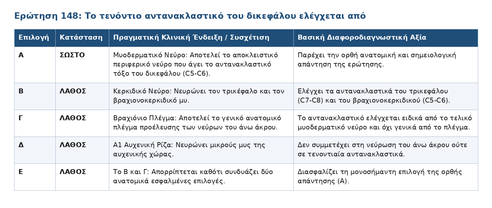
M3_Q148_TAB_03.png
Θέμα 149 (Seq 6)
Σύνολο πινάκων: 3
Το τρίδυμο νεύρο εκφύεται από
📋 ΠΙΝΑΚΑΣ / ΣΧΗΜΑ (M3_Q149_TAB_01.png)

M3_Q149_TAB_01.png
📋 ΠΙΝΑΚΑΣ / ΣΧΗΜΑ (M3_Q149_TAB_02.png)
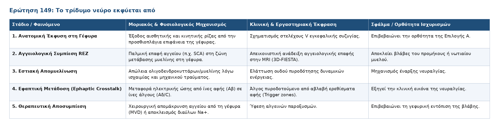
M3_Q149_TAB_02.png
📋 ΠΙΝΑΚΑΣ / ΣΧΗΜΑ (M3_Q149_TAB_03.png)
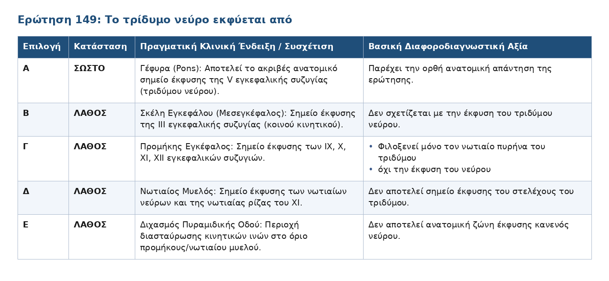
M3_Q149_TAB_03.png
Θέμα 150 (Seq 7)
Σύνολο πινάκων: 3
Ποιο από τα παρακάτω είναι σωστό για το παραπληρωματικό νεύρο
📋 ΠΙΝΑΚΑΣ / ΣΧΗΜΑ (M3_Q150_TAB_01.png)

M3_Q150_TAB_01.png
📋 ΠΙΝΑΚΑΣ / ΣΧΗΜΑ (M3_Q150_TAB_02.png)

M3_Q150_TAB_02.png
📋 ΠΙΝΑΚΑΣ / ΣΧΗΜΑ (M3_Q150_TAB_03.png)
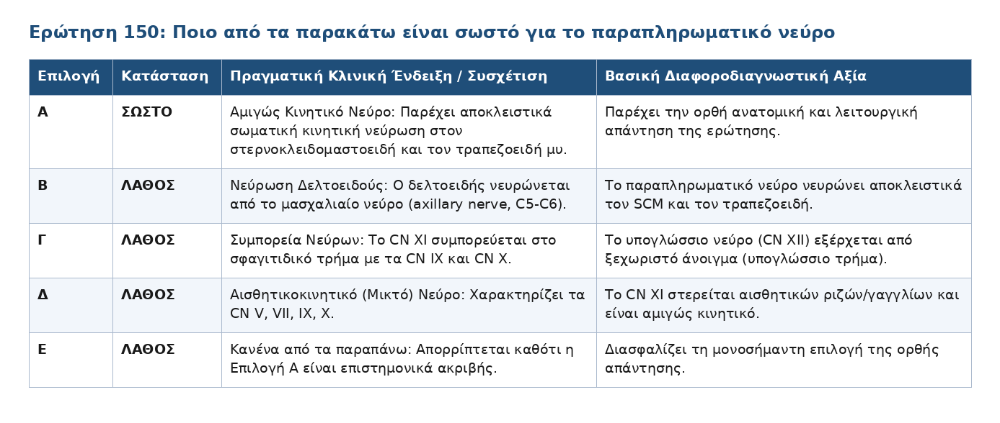
M3_Q150_TAB_03.png
Θέμα 151 (Seq 8)
Σύνολο πινάκων: 3
Στα αρχικά στάδια της νόσου Πάρκινσον διαταράσσεται κυρίως
📋 ΠΙΝΑΚΑΣ / ΣΧΗΜΑ (M3_Q151_TAB_01.png)

M3_Q151_TAB_01.png
📋 ΠΙΝΑΚΑΣ / ΣΧΗΜΑ (M3_Q151_TAB_02.png)
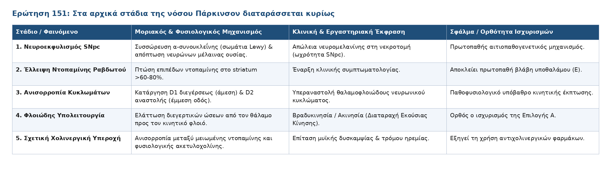
M3_Q151_TAB_02.png
📋 ΠΙΝΑΚΑΣ / ΣΧΗΜΑ (M3_Q151_TAB_03.png)
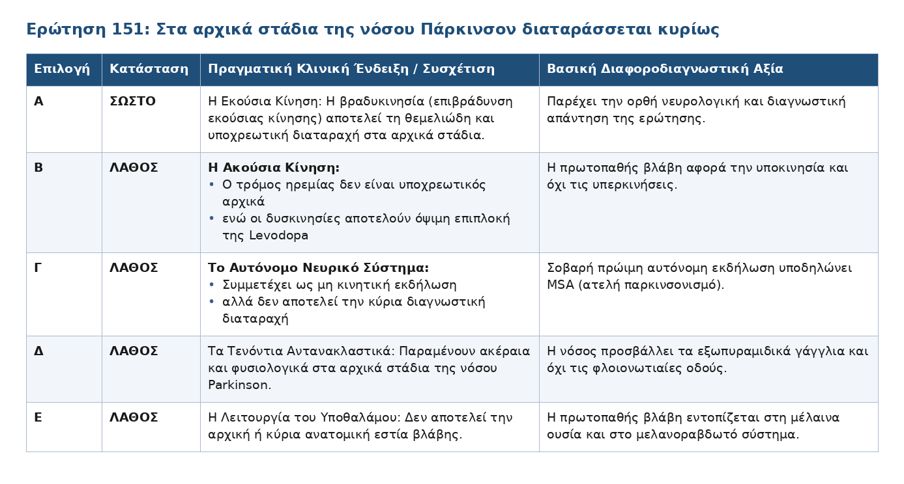
M3_Q151_TAB_03.png
Θέμα 152 (Seq 9)
Σύνολο πινάκων: 3
Το ραβδωτό σώμα αποτελείται από
📋 ΠΙΝΑΚΑΣ / ΣΧΗΜΑ (M3_Q152_TAB_01.png)
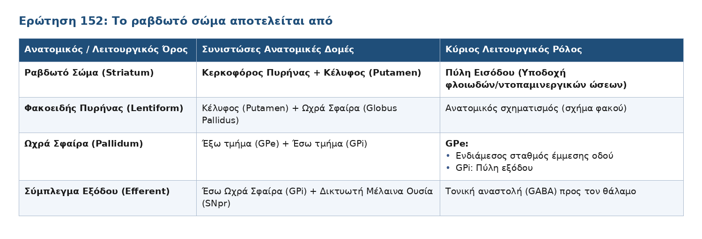
M3_Q152_TAB_01.png
📋 ΠΙΝΑΚΑΣ / ΣΧΗΜΑ (M3_Q152_TAB_02.png)
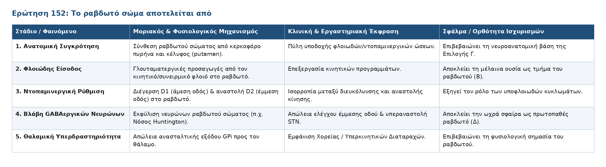
M3_Q152_TAB_02.png
📋 ΠΙΝΑΚΑΣ / ΣΧΗΜΑ (M3_Q152_TAB_03.png)
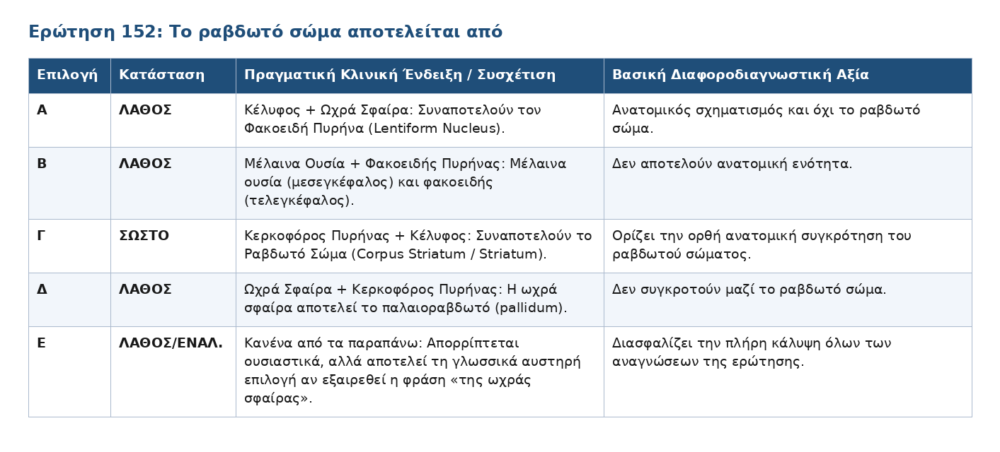
M3_Q152_TAB_03.png
Θέμα 153 (Seq 10)
Σύνολο πινάκων: 3
Ποιο από τα παρακάτω είναι χαρακτηριστικό της μυασθένειας;
📋 ΠΙΝΑΚΑΣ / ΣΧΗΜΑ (M3_Q153_TAB_01.png)
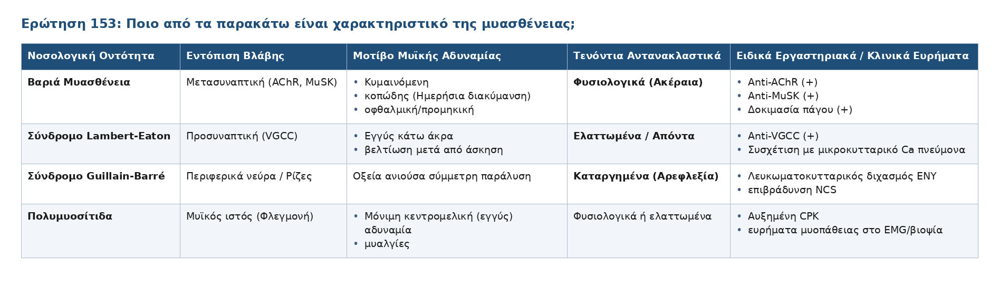
M3_Q153_TAB_01.png
📋 ΠΙΝΑΚΑΣ / ΣΧΗΜΑ (M3_Q153_TAB_02.png)
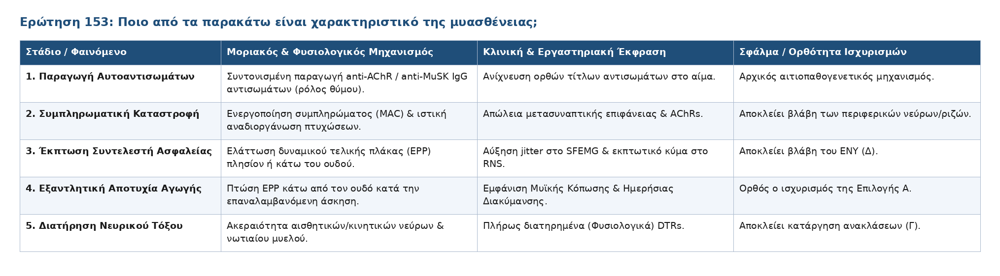
M3_Q153_TAB_02.png
📋 ΠΙΝΑΚΑΣ / ΣΧΗΜΑ (M3_Q153_TAB_03.png)

M3_Q153_TAB_03.png
Θέμα 154 (Seq 11)
Σύνολο πινάκων: 3
Τα σωμάτια Lewy ανευρίσκονται σε εγκεφάλους ασθενών με
📋 ΠΙΝΑΚΑΣ / ΣΧΗΜΑ (M3_Q154_TAB_01.png)

M3_Q154_TAB_01.png
📋 ΠΙΝΑΚΑΣ / ΣΧΗΜΑ (M3_Q154_TAB_02.png)

M3_Q154_TAB_02.png
📋 ΠΙΝΑΚΑΣ / ΣΧΗΜΑ (M3_Q154_TAB_03.png)
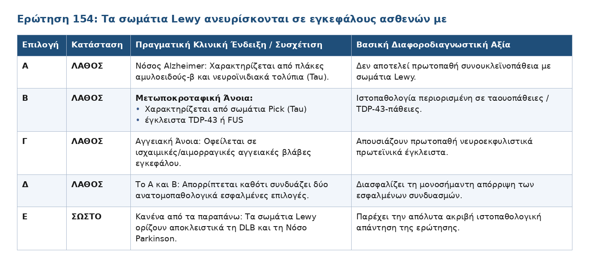
M3_Q154_TAB_03.png
Θέμα 155 (Seq 12)
Σύνολο πινάκων: 4
Αιμορραγικό αρθρικό υγρό (αίμαρθρο) συνήθως παρατηρείται σε
📋 ΠΙΝΑΚΑΣ / ΣΧΗΜΑ (M3_Q155_TAB_01.png)
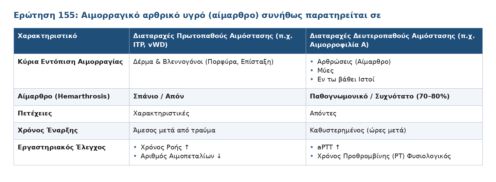
M3_Q155_TAB_01.png
📋 ΠΙΝΑΚΑΣ / ΣΧΗΜΑ (M3_Q155_TAB_02.png)
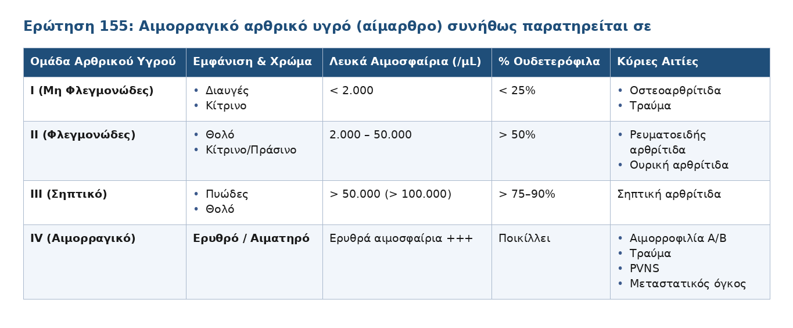
M3_Q155_TAB_02.png
📋 ΠΙΝΑΚΑΣ / ΣΧΗΜΑ (M3_Q155_TAB_03.png)

M3_Q155_TAB_03.png
📋 ΠΙΝΑΚΑΣ / ΣΧΗΜΑ (M3_Q155_TAB_04.png)

M3_Q155_TAB_04.png
Θέμα 156 (Seq 13)
Σύνολο πινάκων: 3
Ποιο από τα παρακάτω δυνατό να χρησιμοποιηθεί στην αντιμετώπιση της υπερθυρεοειδικής κρίσης
📋 ΠΙΝΑΚΑΣ / ΣΧΗΜΑ (M3_Q156_TAB_01.png)

M3_Q156_TAB_01.png
📋 ΠΙΝΑΚΑΣ / ΣΧΗΜΑ (M3_Q156_TAB_02.png)
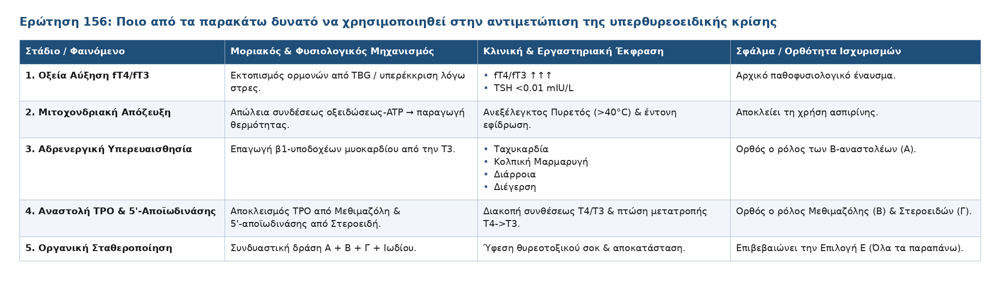
M3_Q156_TAB_02.png
📋 ΠΙΝΑΚΑΣ / ΣΧΗΜΑ (M3_Q156_TAB_03.png)
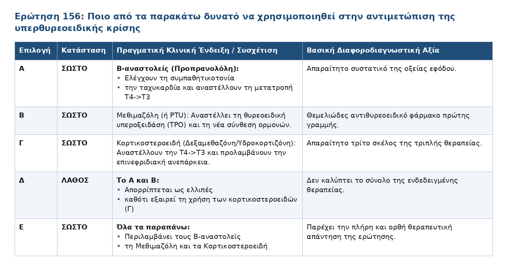
M3_Q156_TAB_03.png
Θέμα 157 (Seq 14)
Σύνολο πινάκων: 3
Όλοι οι παρακάτω παράγοντες πήξεως ελέγχονται με το χρόνο μερικής θρομβοπλαστίνης (PTT) εκτός από ένα:
📋 ΠΙΝΑΚΑΣ / ΣΧΗΜΑ (M3_Q157_TAB_01.png)

M3_Q157_TAB_01.png
📋 ΠΙΝΑΚΑΣ / ΣΧΗΜΑ (M3_Q157_TAB_02.png)

M3_Q157_TAB_02.png
📋 ΠΙΝΑΚΑΣ / ΣΧΗΜΑ (M3_Q157_TAB_03.png)
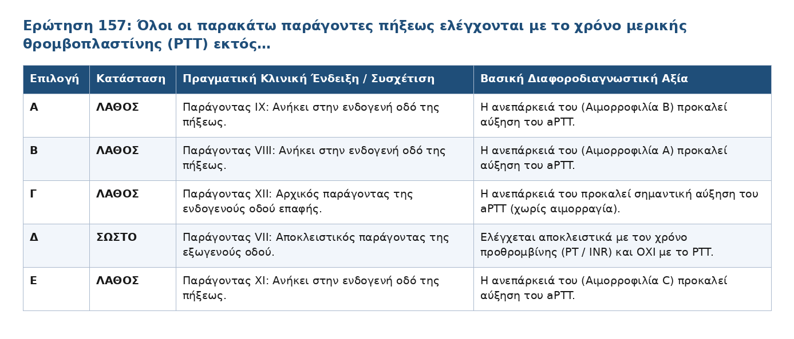
M3_Q157_TAB_03.png
Θέμα 158 (Seq 15)
Σύνολο πινάκων: 3
Ποιος από τους παρακάτω αιτιολογικούς συσχετισμούς ισχύει
📋 ΠΙΝΑΚΑΣ / ΣΧΗΜΑ (M3_Q158_TAB_01.png)
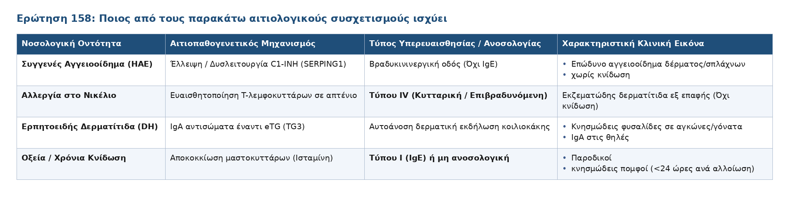
M3_Q158_TAB_01.png
📋 ΠΙΝΑΚΑΣ / ΣΧΗΜΑ (M3_Q158_TAB_02.png)
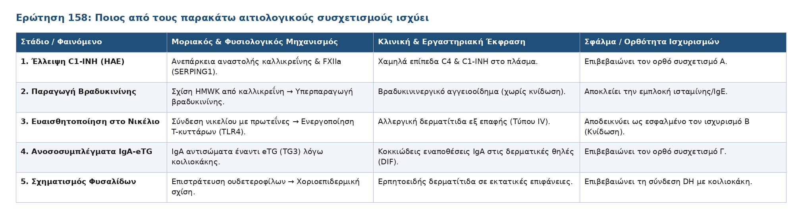
M3_Q158_TAB_02.png
📋 ΠΙΝΑΚΑΣ / ΣΧΗΜΑ (M3_Q158_TAB_03.png)
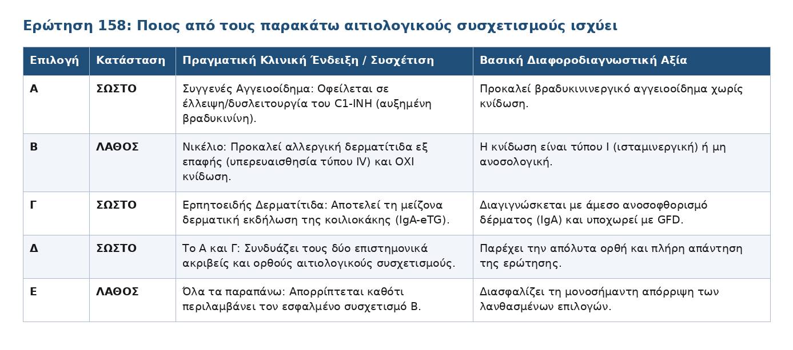
M3_Q158_TAB_03.png
Θέμα 159 (Seq 16)
Σύνολο πινάκων: 3
Όλα τα παρακάτω είναι δυνατό να χρησιμοποιηθούν στην αντιμετώπιση της υπερθυρεοειδικής κρίσης εκτός από ένα:
📋 ΠΙΝΑΚΑΣ / ΣΧΗΜΑ (M3_Q159_TAB_01.png)
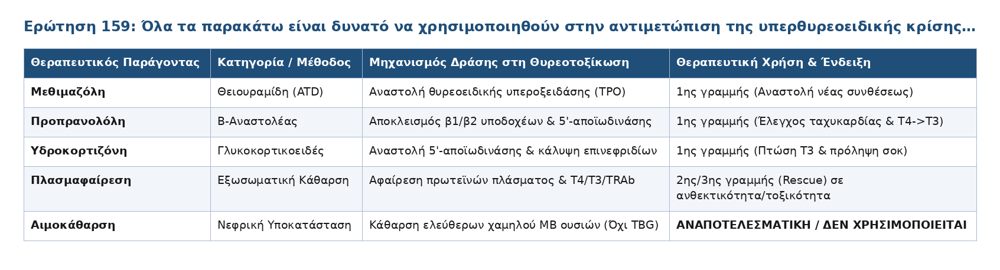
M3_Q159_TAB_01.png
📋 ΠΙΝΑΚΑΣ / ΣΧΗΜΑ (M3_Q159_TAB_02.png)

M3_Q159_TAB_02.png
📋 ΠΙΝΑΚΑΣ / ΣΧΗΜΑ (M3_Q159_TAB_03.png)
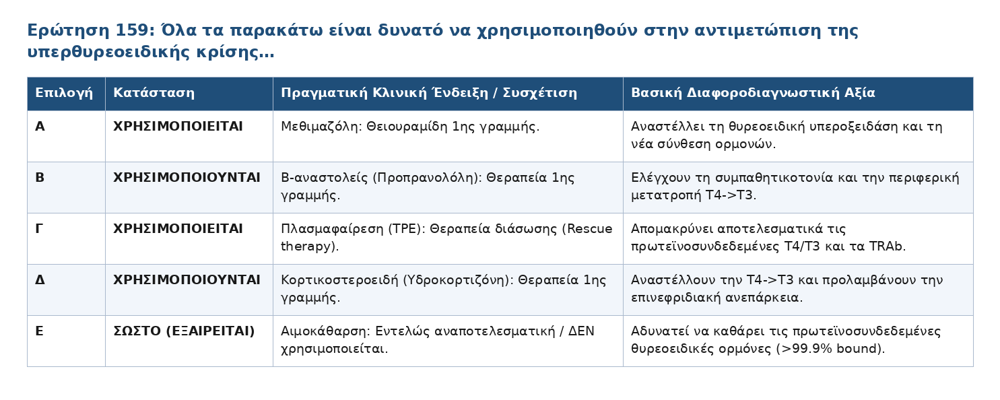
M3_Q159_TAB_03.png
Θέμα 160 (Seq 17)
Σύνολο πινάκων: 3
Ποιο από τα παρακάτω δυνατό να χρησιμοποιηθεί στην αντιμετώπιση της θυρεοειδίτιδας Hashimoto:
📋 ΠΙΝΑΚΑΣ / ΣΧΗΜΑ (M3_Q160_TAB_01.png)
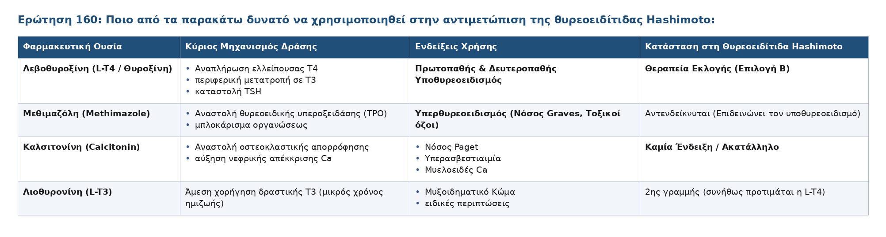
M3_Q160_TAB_01.png
📋 ΠΙΝΑΚΑΣ / ΣΧΗΜΑ (M3_Q160_TAB_02.png)
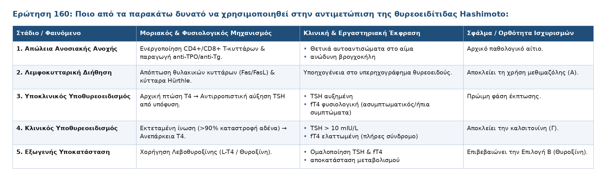
M3_Q160_TAB_02.png
📋 ΠΙΝΑΚΑΣ / ΣΧΗΜΑ (M3_Q160_TAB_03.png)
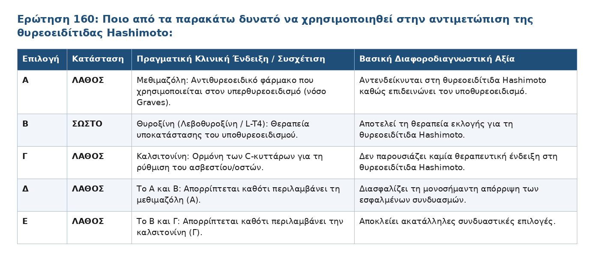
M3_Q160_TAB_03.png
Θέμα 161 (Seq 18)
Σύνολο πινάκων: 3
Από τα παρακάτω νοσήματα, που συνοδεύονται από οξύ θωρακικό πόνο, όλα συνιστούν πιθανό άμεσο κίνδυνο για τη ζωή και απαιτούν επείγουσα αντιμετώπιση εκτός από ένα:
📋 ΠΙΝΑΚΑΣ / ΣΧΗΜΑ (M3_Q161_TAB_01.png)

M3_Q161_TAB_01.png
📋 ΠΙΝΑΚΑΣ / ΣΧΗΜΑ (M3_Q161_TAB_02.png)
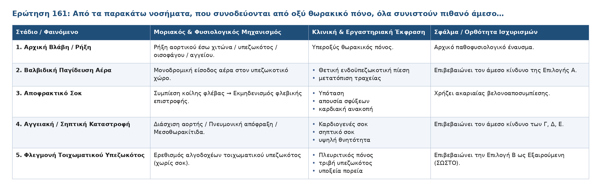
M3_Q161_TAB_02.png
📋 ΠΙΝΑΚΑΣ / ΣΧΗΜΑ (M3_Q161_TAB_03.png)

M3_Q161_TAB_03.png
Θέμα 162 (Seq 19)
Σύνολο πινάκων: 3
Ποιο από τα παρακάτω δυνατό να χρησιμοποιηθεί στην αντιμετώπιση της νόσου Graves:
📋 ΠΙΝΑΚΑΣ / ΣΧΗΜΑ (M3_Q162_TAB_01.png)
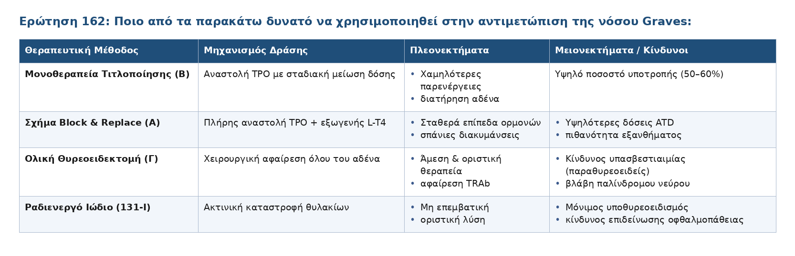
M3_Q162_TAB_01.png
📋 ΠΙΝΑΚΑΣ / ΣΧΗΜΑ (M3_Q162_TAB_02.png)
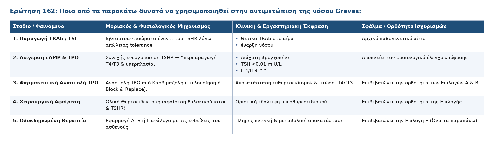
M3_Q162_TAB_02.png
📋 ΠΙΝΑΚΑΣ / ΣΧΗΜΑ (M3_Q162_TAB_03.png)
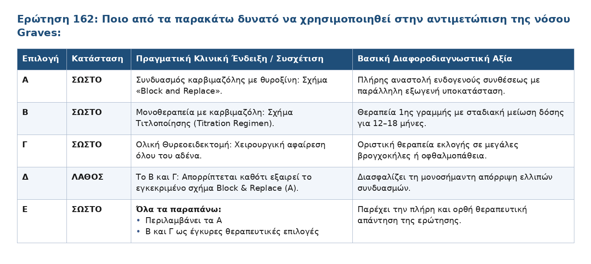
M3_Q162_TAB_03.png
Θέμα 163 (Seq 20)
Σύνολο πινάκων: 3
Όλα τα παρακάτω δυνατό να παρουσιάζουν αυξημένα επίπεδα στον ορό σε οξύ έμφραγμα μυοκαρδίου εκτός από ένα:
📋 ΠΙΝΑΚΑΣ / ΣΧΗΜΑ (M3_Q163_TAB_01.png)
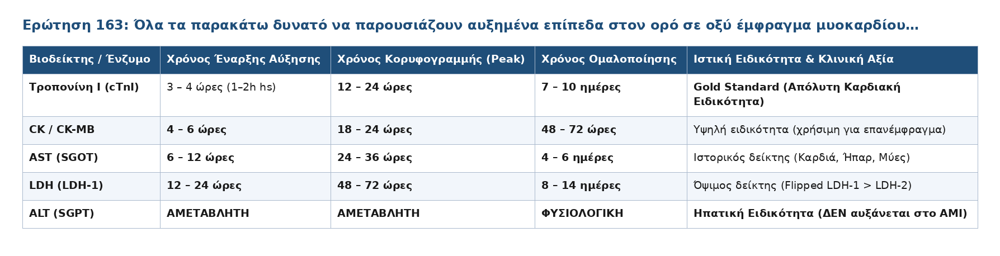
M3_Q163_TAB_01.png
📋 ΠΙΝΑΚΑΣ / ΣΧΗΜΑ (M3_Q163_TAB_02.png)
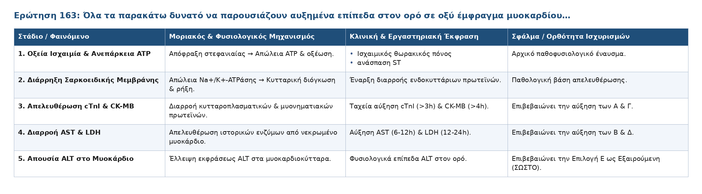
M3_Q163_TAB_02.png
📋 ΠΙΝΑΚΑΣ / ΣΧΗΜΑ (M3_Q163_TAB_03.png)

M3_Q163_TAB_03.png
Θέμα 164 (Seq 21)
Σύνολο πινάκων: 3
Όλα τα παρακάτω είναι σωστά για τη ρευματοειδή αρθρίτιδα εκτός από ένα:
📋 ΠΙΝΑΚΑΣ / ΣΧΗΜΑ (M3_Q164_TAB_01.png)
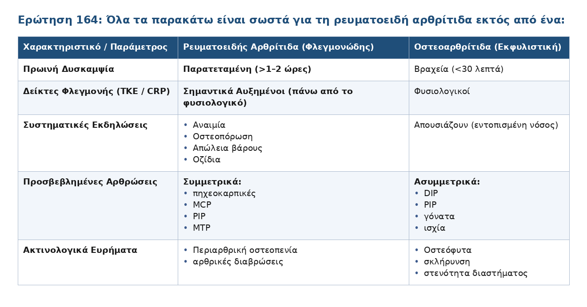
M3_Q164_TAB_01.png
📋 ΠΙΝΑΚΑΣ / ΣΧΗΜΑ (M3_Q164_TAB_02.png)

M3_Q164_TAB_02.png
📋 ΠΙΝΑΚΑΣ / ΣΧΗΜΑ (M3_Q164_TAB_03.png)

M3_Q164_TAB_03.png
Θέμα 165 (Seq 22)
Σύνολο πινάκων: 3
Ποιο από τα παρακάτω δυνατό να χρησιμοποιηθεί για τη διάγνωση της πνευμονίας από Legionella:
📋 ΠΙΝΑΚΑΣ / ΣΧΗΜΑ (M3_Q165_TAB_01.png)
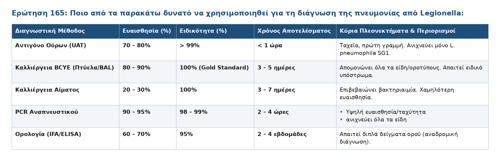
M3_Q165_TAB_01.png
📋 ΠΙΝΑΚΑΣ / ΣΧΗΜΑ (M3_Q165_TAB_02.png)

M3_Q165_TAB_02.png
📋 ΠΙΝΑΚΑΣ / ΣΧΗΜΑ (M3_Q165_TAB_03.png)
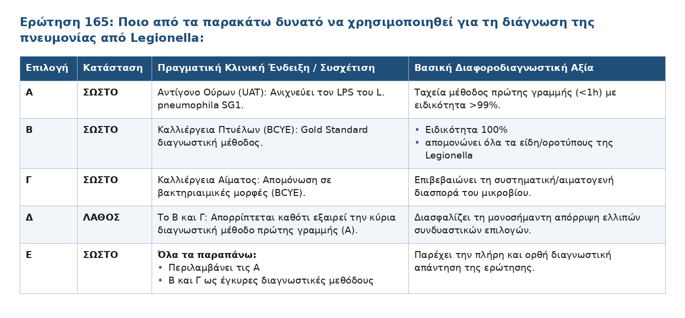
M3_Q165_TAB_03.png
Θέμα 166 (Seq 23)
Σύνολο πινάκων: 3
Σε ασθενή με πνευμονία ποιο από τα παρακάτω κλινικοεργαστηριακά ευρήματα υποδηλώνει λοίμωξη από Legionella:
📋 ΠΙΝΑΚΑΣ / ΣΧΗΜΑ (M3_Q166_TAB_01.png)
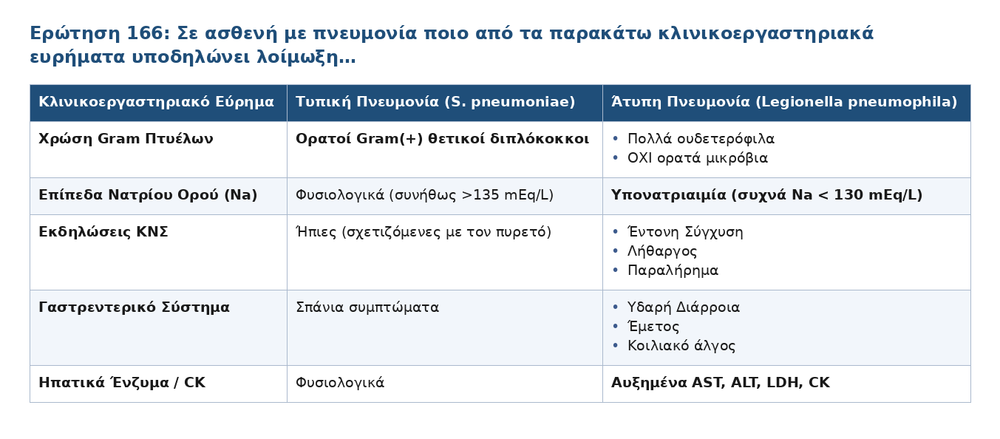
M3_Q166_TAB_01.png
📋 ΠΙΝΑΚΑΣ / ΣΧΗΜΑ (M3_Q166_TAB_02.png)

M3_Q166_TAB_02.png
📋 ΠΙΝΑΚΑΣ / ΣΧΗΜΑ (M3_Q166_TAB_03.png)

M3_Q166_TAB_03.png
Θέμα 167 (Seq 24)
Σύνολο πινάκων: 3
Σε ασθενή με πνευμονία ποιο από τα παρακάτω κλινικοεργαστηριακά ευρήματα υποδηλώνει λοίμωξη από Legionella:
📋 ΠΙΝΑΚΑΣ / ΣΧΗΜΑ (M3_Q167_TAB_01.png)
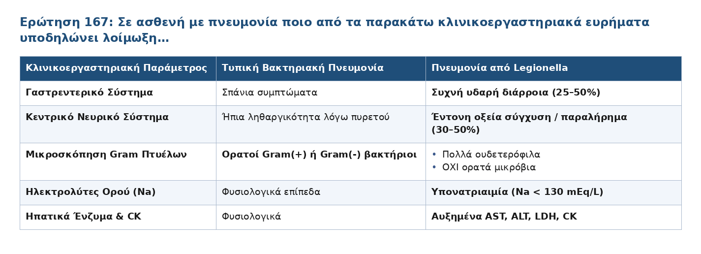
M3_Q167_TAB_01.png
📋 ΠΙΝΑΚΑΣ / ΣΧΗΜΑ (M3_Q167_TAB_02.png)
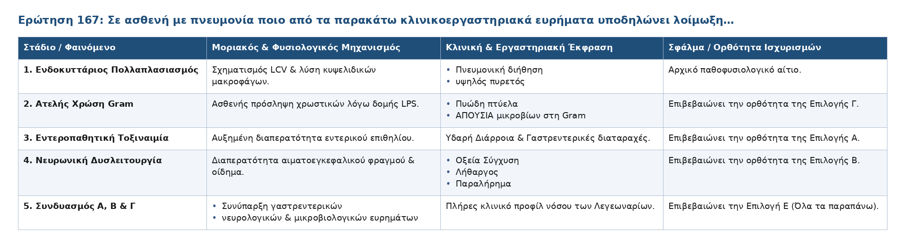
M3_Q167_TAB_02.png
📋 ΠΙΝΑΚΑΣ / ΣΧΗΜΑ (M3_Q167_TAB_03.png)

M3_Q167_TAB_03.png
Θέμα 168 (Seq 25)
Σύνολο πινάκων: 3
Σε ποιο από τα παρακάτω έχουμε διαταραχές της λειτουργίας των αιμοπεταλίων:
📋 ΠΙΝΑΚΑΣ / ΣΧΗΜΑ (M3_Q168_TAB_01.png)
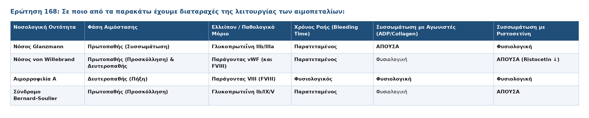
M3_Q168_TAB_01.png
📋 ΠΙΝΑΚΑΣ / ΣΧΗΜΑ (M3_Q168_TAB_02.png)
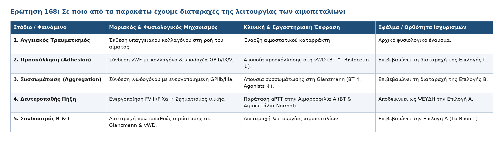
M3_Q168_TAB_02.png
📋 ΠΙΝΑΚΑΣ / ΣΧΗΜΑ (M3_Q168_TAB_03.png)
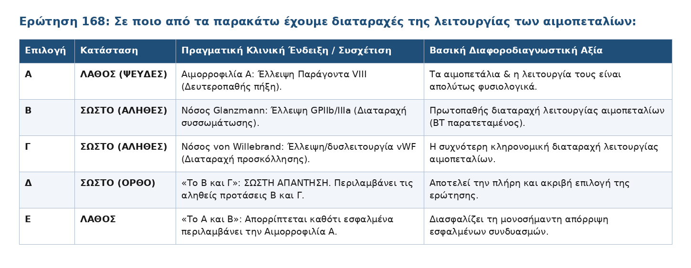
M3_Q168_TAB_03.png
Θέμα 169 (Seq 26)
Σύνολο πινάκων: 3
Ποιο από τα παρακάτω αποτελεί μέθοδο διερεύνησης της λειτουργίας των αιμοπεταλίων:
📋 ΠΙΝΑΚΑΣ / ΣΧΗΜΑ (M3_Q169_TAB_01.png)

M3_Q169_TAB_01.png
📋 ΠΙΝΑΚΑΣ / ΣΧΗΜΑ (M3_Q169_TAB_02.png)
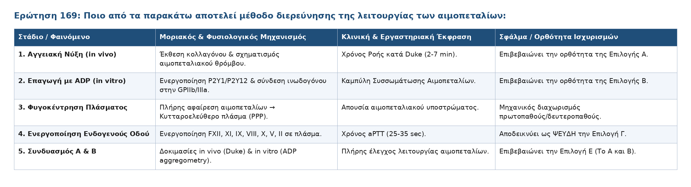
M3_Q169_TAB_02.png
📋 ΠΙΝΑΚΑΣ / ΣΧΗΜΑ (M3_Q169_TAB_03.png)
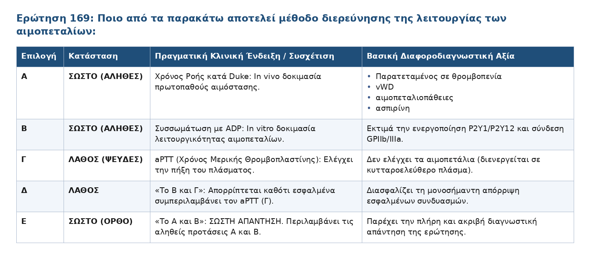
M3_Q169_TAB_03.png
Θέμα 170 (Seq 27)
Σύνολο πινάκων: 4
Όλοι οι παρακάτω παράγοντες πήξεως ελέγχονται με το χρόνο προθρομβίνης (Quick) εκτός από ένα:
📋 ΠΙΝΑΚΑΣ / ΣΧΗΜΑ (M3_Q170_TAB_01.png)

M3_Q170_TAB_01.png
📋 ΠΙΝΑΚΑΣ / ΣΧΗΜΑ (M3_Q170_TAB_02.png)
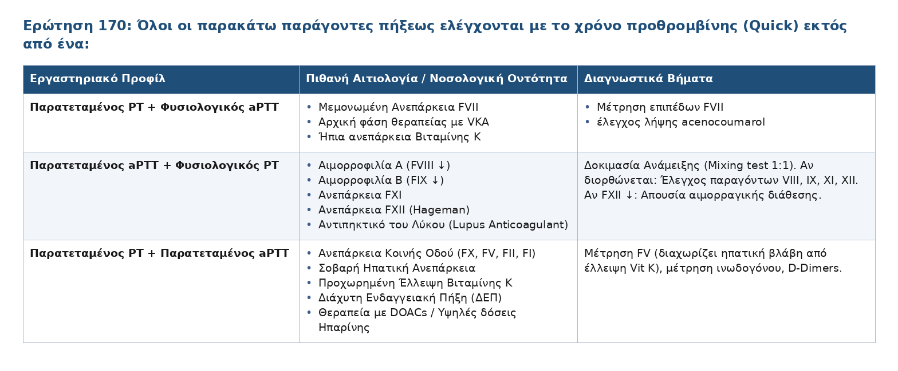
M3_Q170_TAB_02.png
📋 ΠΙΝΑΚΑΣ / ΣΧΗΜΑ (M3_Q170_TAB_03.png)

M3_Q170_TAB_03.png
📋 ΠΙΝΑΚΑΣ / ΣΧΗΜΑ (M3_Q170_TAB_04.png)

M3_Q170_TAB_04.png
Θέμα 171 (Seq 28)
Σύνολο πινάκων: 3
Ασθενής με συγγενή αιμορραγική διάθεση που έχει παρατεταμένο χρόνο μερικής θρομβοπλαστίνης (PTT) πιθανότατα πάσχει από:
📋 ΠΙΝΑΚΑΣ / ΣΧΗΜΑ (M3_Q171_TAB_01.png)

M3_Q171_TAB_01.png
📋 ΠΙΝΑΚΑΣ / ΣΧΗΜΑ (M3_Q171_TAB_02.png)
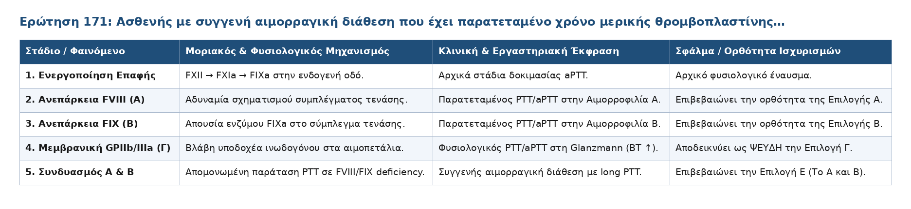
M3_Q171_TAB_02.png
📋 ΠΙΝΑΚΑΣ / ΣΧΗΜΑ (M3_Q171_TAB_03.png)

M3_Q171_TAB_03.png
Θέμα 172 (Seq 29)
Σύνολο πινάκων: 4
Αναιμία από μη – αποδοτική αιμοποίηση παρατηρείται σε όλα τα παρακάτω εκτός ενός:
📋 ΠΙΝΑΚΑΣ / ΣΧΗΜΑ (M3_Q172_TAB_01.png)

M3_Q172_TAB_01.png
📋 ΠΙΝΑΚΑΣ / ΣΧΗΜΑ (M3_Q172_TAB_02.png)

M3_Q172_TAB_02.png
📋 ΠΙΝΑΚΑΣ / ΣΧΗΜΑ (M3_Q172_TAB_03.png)

M3_Q172_TAB_03.png
📋 ΠΙΝΑΚΑΣ / ΣΧΗΜΑ (M3_Q172_TAB_04.png)
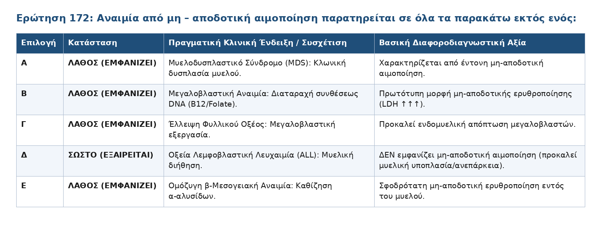
M3_Q172_TAB_04.png
Θέμα 173 (Seq 30)
Σύνολο πινάκων: 3
Η ελκώδης κολίτιδα εντοπίζεται:
📋 ΠΙΝΑΚΑΣ / ΣΧΗΜΑ (M3_Q173_TAB_01.png)
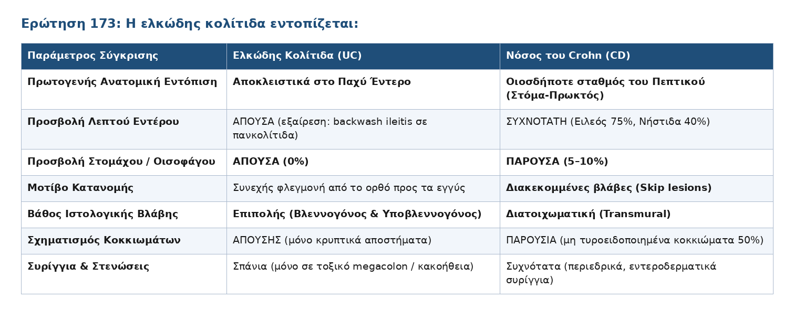
M3_Q173_TAB_01.png
📋 ΠΙΝΑΚΑΣ / ΣΧΗΜΑ (M3_Q173_TAB_02.png)
M3_Q173_TAB_02.png
📋 ΠΙΝΑΚΑΣ / ΣΧΗΜΑ (M3_Q173_TAB_03.png)

M3_Q173_TAB_03.png
Θέμα 174 (Seq 31)
Σύνολο πινάκων: 3
Η ηπατίτιδα C μεταδίδεται συχνότερα με:
📋 ΠΙΝΑΚΑΣ / ΣΧΗΜΑ (M3_Q174_TAB_01.png)

M3_Q174_TAB_01.png
📋 ΠΙΝΑΚΑΣ / ΣΧΗΜΑ (M3_Q174_TAB_02.png)

M3_Q174_TAB_02.png
📋 ΠΙΝΑΚΑΣ / ΣΧΗΜΑ (M3_Q174_TAB_03.png)

M3_Q174_TAB_03.png
Θέμα 175 (Seq 32)
Σύνολο πινάκων: 3
Η θεραπεία πρώτης εκλογής σε ασθενή 60 ετών με αχαλασία οισοφάγου είναι:
📋 ΠΙΝΑΚΑΣ / ΣΧΗΜΑ (M3_Q175_TAB_01.png)
M3_Q175_TAB_01.png
📋 ΠΙΝΑΚΑΣ / ΣΧΗΜΑ (M3_Q175_TAB_02.png)

M3_Q175_TAB_02.png
📋 ΠΙΝΑΚΑΣ / ΣΧΗΜΑ (M3_Q175_TAB_03.png)
M3_Q175_TAB_03.png
Θέμα 176 (Seq 33)
Σύνολο πινάκων: 3
Ποιο από τα παρακάτω Δεν αποτελεί τυπικό χαρακτηριστικό της αλκοολικής ηπατίτιδας:
📋 ΠΙΝΑΚΑΣ / ΣΧΗΜΑ (M3_Q176_TAB_01.png)
M3_Q176_TAB_01.png
📋 ΠΙΝΑΚΑΣ / ΣΧΗΜΑ (M3_Q176_TAB_02.png)

M3_Q176_TAB_02.png
📋 ΠΙΝΑΚΑΣ / ΣΧΗΜΑ (M3_Q176_TAB_03.png)

M3_Q176_TAB_03.png
Θέμα 176 (Seq 34)
Σύνολο πινάκων: 3
Ποιο από τα παρακάτω Δεν αποτελεί τυπικό χαρακτηριστικό της αλκοολικής ηπατίτιδας:
📋 ΠΙΝΑΚΑΣ / ΣΧΗΜΑ (M3_Q176B_TAB_01.png)
M3_Q176B_TAB_01.png
📋 ΠΙΝΑΚΑΣ / ΣΧΗΜΑ (M3_Q176B_TAB_02.png)
M3_Q176B_TAB_02.png
📋 ΠΙΝΑΚΑΣ / ΣΧΗΜΑ (M3_Q176B_TAB_03.png)

M3_Q176B_TAB_03.png
Θέμα 177 (Seq 35)
Σύνολο πινάκων: 4
Τι από τα παρακάτω δεν είναι χρήσιμο στην αντιμετώπιση της οξείας αιμορραγίας από το πεπτικό;
📋 ΠΙΝΑΚΑΣ / ΣΧΗΜΑ (M3_Q177_TAB_01.png)
M3_Q177_TAB_01.png
📋 ΠΙΝΑΚΑΣ / ΣΧΗΜΑ (M3_Q177_TAB_02.png)
M3_Q177_TAB_02.png
📋 ΠΙΝΑΚΑΣ / ΣΧΗΜΑ (M3_Q177_TAB_03.png)
M3_Q177_TAB_03.png
📋 ΠΙΝΑΚΑΣ / ΣΧΗΜΑ (M3_Q177_TAB_04.png)
M3_Q177_TAB_04.png
Θέμα 178 (Seq 36)
Σύνολο πινάκων: 3
Σε ενήλικα όλα τα παρακάτω είναι κλινικά χαρακτηριστικά της αυξημένης παραγωγής αυξητικής ορμόνης λόγω αδενώματος της υπόφυσης εκτός από ένα:
📋 ΠΙΝΑΚΑΣ / ΣΧΗΜΑ (M3_Q178_TAB_01.png)
M3_Q178_TAB_01.png
📋 ΠΙΝΑΚΑΣ / ΣΧΗΜΑ (M3_Q178_TAB_02.png)

M3_Q178_TAB_02.png
📋 ΠΙΝΑΚΑΣ / ΣΧΗΜΑ (M3_Q178_TAB_03.png)

M3_Q178_TAB_03.png
Θέμα 179 (Seq 37)
Σύνολο πινάκων: 3
Ποια από τις παρακάτω διαταραχές δυνατό να προκαλέσει παράταση του χρόνος ροής:
📋 ΠΙΝΑΚΑΣ / ΣΧΗΜΑ (M3_Q179_TAB_01.png)
M3_Q179_TAB_01.png
📋 ΠΙΝΑΚΑΣ / ΣΧΗΜΑ (M3_Q179_TAB_02.png)

M3_Q179_TAB_02.png
📋 ΠΙΝΑΚΑΣ / ΣΧΗΜΑ (M3_Q179_TAB_03.png)
M3_Q179_TAB_03.png
Θέμα 180 (Seq 38)
Σύνολο πινάκων: 3
Ποια από τις παρακάτω συσχετίσεις αυξητικού παράγοντα και επίδρασής του περιγράφεται σωστά;
📋 ΠΙΝΑΚΑΣ / ΣΧΗΜΑ (M3_Q180_TAB_01.png)
M3_Q180_TAB_01.png
📋 ΠΙΝΑΚΑΣ / ΣΧΗΜΑ (M3_Q180_TAB_02.png)
M3_Q180_TAB_02.png
📋 ΠΙΝΑΚΑΣ / ΣΧΗΜΑ (M3_Q180_TAB_03.png)

M3_Q180_TAB_03.png
Θέμα 181 (Seq 39)
Σύνολο πινάκων: 3
Ποιο από τα παρακάτω χαρακτηρίζει το αντιφωσφολιπιδικό σύνδρομο:
📋 ΠΙΝΑΚΑΣ / ΣΧΗΜΑ (M3_Q181_TAB_01.png)

M3_Q181_TAB_01.png
📋 ΠΙΝΑΚΑΣ / ΣΧΗΜΑ (M3_Q181_TAB_02.png)

M3_Q181_TAB_02.png
📋 ΠΙΝΑΚΑΣ / ΣΧΗΜΑ (M3_Q181_TAB_03.png)

M3_Q181_TAB_03.png
Θέμα 182 (Seq 40)
Σύνολο πινάκων: 4
Σε ποια από τις παρακάτω καταστάσεις είναι αυξημένη η συχνότητα νέκρωσης του δέρματος από κουμαρινικά αντιπηκτικά:
📋 ΠΙΝΑΚΑΣ / ΣΧΗΜΑ (M3_Q182_TAB_01.png)
M3_Q182_TAB_01.png
📋 ΠΙΝΑΚΑΣ / ΣΧΗΜΑ (M3_Q182_TAB_02.png)

M3_Q182_TAB_02.png
📋 ΠΙΝΑΚΑΣ / ΣΧΗΜΑ (M3_Q182_TAB_03.png)
M3_Q182_TAB_03.png
📋 ΠΙΝΑΚΑΣ / ΣΧΗΜΑ (M3_Q182_TAB_04.png)

M3_Q182_TAB_04.png
Θέμα 183 (Seq 41)
Σύνολο πινάκων: 4
Ποιος από τους παρακάτω παράγοντες είναι μειωμένος σε έλλειψη βιταμίνης Κ ή σε χορήγηση κουμαρινικών αντιπηκτικών:
📋 ΠΙΝΑΚΑΣ / ΣΧΗΜΑ (M3_Q183_TAB_01.png)
M3_Q183_TAB_01.png
📋 ΠΙΝΑΚΑΣ / ΣΧΗΜΑ (M3_Q183_TAB_02.png)

M3_Q183_TAB_02.png
📋 ΠΙΝΑΚΑΣ / ΣΧΗΜΑ (M3_Q183_TAB_03.png)
M3_Q183_TAB_03.png
📋 ΠΙΝΑΚΑΣ / ΣΧΗΜΑ (M3_Q183_TAB_04.png)

M3_Q183_TAB_04.png
Θέμα 184 (Seq 42)
Σύνολο πινάκων: 3
Αιμορραγικό αρθρικό υγρό (αίμαρθρος) συνήθως παρατηρείται σε:
📋 ΠΙΝΑΚΑΣ / ΣΧΗΜΑ (M3_Q184_TAB_01.png)

M3_Q184_TAB_01.png
📋 ΠΙΝΑΚΑΣ / ΣΧΗΜΑ (M3_Q184_TAB_02.png)
M3_Q184_TAB_02.png
📋 ΠΙΝΑΚΑΣ / ΣΧΗΜΑ (M3_Q184_TAB_03.png)
M3_Q184_TAB_03.png
Θέμα 185 (Seq 43)
Σύνολο πινάκων: 3
Άσηπτη νέκρωση κεφαλής μηριαίου συνήθως παρατηρείται σε:
📋 ΠΙΝΑΚΑΣ / ΣΧΗΜΑ (M3_Q185_TAB_01.png)
M3_Q185_TAB_01.png
📋 ΠΙΝΑΚΑΣ / ΣΧΗΜΑ (M3_Q185_TAB_02.png)
M3_Q185_TAB_02.png
📋 ΠΙΝΑΚΑΣ / ΣΧΗΜΑ (M3_Q185_TAB_03.png)

M3_Q185_TAB_03.png
Θέμα 186 (Seq 44)
Σύνολο πινάκων: 3
Η έλλειψη της δεϋδρογενάσης της 6-φωσφορικής γλυκόζης (έλλειψη G-6-PD):
📋 ΠΙΝΑΚΑΣ / ΣΧΗΜΑ (M3_Q186_TAB_01.png)
M3_Q186_TAB_01.png
📋 ΠΙΝΑΚΑΣ / ΣΧΗΜΑ (M3_Q186_TAB_02.png)

M3_Q186_TAB_02.png
📋 ΠΙΝΑΚΑΣ / ΣΧΗΜΑ (M3_Q186_TAB_03.png)
M3_Q186_TAB_03.png
Θέμα 187 (Seq 45)
Σύνολο πινάκων: 3
Στα υπερηχοκαρδιογραφικά ευρήματα της μεσοκολπικής επικοινωνίας περιλαμβάνονται:
📋 ΠΙΝΑΚΑΣ / ΣΧΗΜΑ (M3_Q187_TAB_01.png)

M3_Q187_TAB_01.png
📋 ΠΙΝΑΚΑΣ / ΣΧΗΜΑ (M3_Q187_TAB_02.png)
M3_Q187_TAB_02.png
📋 ΠΙΝΑΚΑΣ / ΣΧΗΜΑ (M3_Q187_TAB_03.png)
M3_Q187_TAB_03.png
Θέμα 188 (Seq 46)
Σύνολο πινάκων: 3
Οι αρρυθμίες μπορεί να οφείλονται σε:
📋 ΠΙΝΑΚΑΣ / ΣΧΗΜΑ (M3_Q188_TAB_01.png)

M3_Q188_TAB_01.png
📋 ΠΙΝΑΚΑΣ / ΣΧΗΜΑ (M3_Q188_TAB_02.png)

M3_Q188_TAB_02.png
📋 ΠΙΝΑΚΑΣ / ΣΧΗΜΑ (M3_Q188_TAB_03.png)

M3_Q188_TAB_03.png
Θέμα 189 (Seq 47)
Σύνολο πινάκων: 3
Στη στένωση του ισθμού της αορτής παρατηρούνται όλα τα παρακάτω εκτός από ένα:
📋 ΠΙΝΑΚΑΣ / ΣΧΗΜΑ (M3_Q189_TAB_01.png)

M3_Q189_TAB_01.png
📋 ΠΙΝΑΚΑΣ / ΣΧΗΜΑ (M3_Q189_TAB_02.png)

M3_Q189_TAB_02.png
📋 ΠΙΝΑΚΑΣ / ΣΧΗΜΑ (M3_Q189_TAB_03.png)
M3_Q189_TAB_03.png
Θέμα 190 (Seq 48)
Σύνολο πινάκων: 3
Ποιο από τα παρακάτω παρατηρείται στη σαρκοείδωση:
📋 ΠΙΝΑΚΑΣ / ΣΧΗΜΑ (M3_Q190_TAB_01.png)
M3_Q190_TAB_01.png
📋 ΠΙΝΑΚΑΣ / ΣΧΗΜΑ (M3_Q190_TAB_02.png)

M3_Q190_TAB_02.png
📋 ΠΙΝΑΚΑΣ / ΣΧΗΜΑ (M3_Q190_TAB_03.png)
M3_Q190_TAB_03.png
Θέμα 191 (Seq 49)
Σύνολο πινάκων: 3
Ποιο από τα παρακάτω παρατηρείται στη σαρκοείδωση:
📋 ΠΙΝΑΚΑΣ / ΣΧΗΜΑ (M3_Q191_TAB_01.png)

M3_Q191_TAB_01.png
📋 ΠΙΝΑΚΑΣ / ΣΧΗΜΑ (M3_Q191_TAB_02.png)
M3_Q191_TAB_02.png
📋 ΠΙΝΑΚΑΣ / ΣΧΗΜΑ (M3_Q191_TAB_03.png)

M3_Q191_TAB_03.png
Θέμα 192 (Seq 50)
Σύνολο πινάκων: 3
Σε ποιο από τα παρακάτω παρατηρείται αύξηση της κινάσης της κρεατίνης (CPK):
📋 ΠΙΝΑΚΑΣ / ΣΧΗΜΑ (M3_Q192_TAB_01.png)
M3_Q192_TAB_01.png
📋 ΠΙΝΑΚΑΣ / ΣΧΗΜΑ (M3_Q192_TAB_02.png)

M3_Q192_TAB_02.png
📋 ΠΙΝΑΚΑΣ / ΣΧΗΜΑ (M3_Q192_TAB_03.png)

M3_Q192_TAB_03.png
Θέμα 194 (Seq 51)
Σύνολο πινάκων: 3
Σε ποιο από τα παρακάτω παρατηρείται αύξηση της κινάσης της κρεατίνης (CPK):
📋 ΠΙΝΑΚΑΣ / ΣΧΗΜΑ (M3_Q194_TAB_01.png)

M3_Q194_TAB_01.png
📋 ΠΙΝΑΚΑΣ / ΣΧΗΜΑ (M3_Q194_TAB_02.png)

M3_Q194_TAB_02.png
📋 ΠΙΝΑΚΑΣ / ΣΧΗΜΑ (M3_Q194_TAB_03.png)

M3_Q194_TAB_03.png
Θέμα 194 (Seq 52)
Σύνολο πινάκων: 3
Σε ποιο από τα παρακάτω παρατηρείται αύξηση της κινάσης της κρεατίνης (CPK):
📋 ΠΙΝΑΚΑΣ / ΣΧΗΜΑ (M3_Q194B_TAB_01.png)
M3_Q194B_TAB_01.png
📋 ΠΙΝΑΚΑΣ / ΣΧΗΜΑ (M3_Q194B_TAB_02.png)

M3_Q194B_TAB_02.png
📋 ΠΙΝΑΚΑΣ / ΣΧΗΜΑ (M3_Q194B_TAB_03.png)

M3_Q194B_TAB_03.png
Θέμα 196 (Seq 53)
Σύνολο πινάκων: 3
Ποιο από τα παρακάτω ισχύει στη λοιμώδη μονοπυρήνωση:
📋 ΠΙΝΑΚΑΣ / ΣΧΗΜΑ (M3_Q196_TAB_01.png)

M3_Q196_TAB_01.png
📋 ΠΙΝΑΚΑΣ / ΣΧΗΜΑ (M3_Q196_TAB_02.png)
M3_Q196_TAB_02.png
📋 ΠΙΝΑΚΑΣ / ΣΧΗΜΑ (M3_Q196_TAB_03.png)

M3_Q196_TAB_03.png
Θέμα 197 (Seq 54)
Σύνολο πινάκων: 3
Ποιο από τα παρακάτω ισχύει στη λοιμώδη μονοπυρήνωση:
📋 ΠΙΝΑΚΑΣ / ΣΧΗΜΑ (M3_Q197_TAB_01.png)

M3_Q197_TAB_01.png
📋 ΠΙΝΑΚΑΣ / ΣΧΗΜΑ (M3_Q197_TAB_02.png)
M3_Q197_TAB_02.png
📋 ΠΙΝΑΚΑΣ / ΣΧΗΜΑ (M3_Q197_TAB_03.png)

M3_Q197_TAB_03.png
Θέμα 198 (Seq 55)
Σύνολο πινάκων: 3
Ποιο από τα παρακάτω προκαλεί διάχυτη ενδαγγειακή πήξη (Δεπ, DIC):
📋 ΠΙΝΑΚΑΣ / ΣΧΗΜΑ (M3_Q198_TAB_01.png)
M3_Q198_TAB_01.png
📋 ΠΙΝΑΚΑΣ / ΣΧΗΜΑ (M3_Q198_TAB_02.png)

M3_Q198_TAB_02.png
📋 ΠΙΝΑΚΑΣ / ΣΧΗΜΑ (M3_Q198_TAB_03.png)
M3_Q198_TAB_03.png
Θέμα 199 (Seq 56)
Σύνολο πινάκων: 3
Ποιο από τα παρακάτω προκαλεί διάχυτη ενδαγγειακή πήξη (Δεπ, DIC):
📋 ΠΙΝΑΚΑΣ / ΣΧΗΜΑ (M3_Q199_TAB_01.png)
M3_Q199_TAB_01.png
📋 ΠΙΝΑΚΑΣ / ΣΧΗΜΑ (M3_Q199_TAB_02.png)

M3_Q199_TAB_02.png
📋 ΠΙΝΑΚΑΣ / ΣΧΗΜΑ (M3_Q199_TAB_03.png)
M3_Q199_TAB_03.png
Θέμα 200 (Seq 57)
Σύνολο πινάκων: 3
Ποιο από τα παρακάτω ισχύει στη λοιμώδη μονοπυρήνωση:
📋 ΠΙΝΑΚΑΣ / ΣΧΗΜΑ (M3_Q200_TAB_01.png)
M3_Q200_TAB_01.png
📋 ΠΙΝΑΚΑΣ / ΣΧΗΜΑ (M3_Q200_TAB_02.png)
M3_Q200_TAB_02.png
📋 ΠΙΝΑΚΑΣ / ΣΧΗΜΑ (M3_Q200_TAB_03.png)

M3_Q200_TAB_03.png
Θέμα 201 (Seq 58)
Σύνολο πινάκων: 3
Η ασφαλέστερη μέθοδος διάγνωσης για το μελιταίο πυρετό:
📋 ΠΙΝΑΚΑΣ / ΣΧΗΜΑ (M3_Q201_TAB_01.png)
M3_Q201_TAB_01.png
📋 ΠΙΝΑΚΑΣ / ΣΧΗΜΑ (M3_Q201_TAB_02.png)

M3_Q201_TAB_02.png
📋 ΠΙΝΑΚΑΣ / ΣΧΗΜΑ (M3_Q201_TAB_03.png)

M3_Q201_TAB_03.png
Θέμα 201 (Seq 59)
Σύνολο πινάκων: 3
Η ασφαλέστερη μέθοδος διάγνωσης για το μελιταίο πυρετό:
📋 ΠΙΝΑΚΑΣ / ΣΧΗΜΑ (M3_Q201B_TAB_01.png)
M3_Q201B_TAB_01.png
📋 ΠΙΝΑΚΑΣ / ΣΧΗΜΑ (M3_Q201B_TAB_02.png)

M3_Q201B_TAB_02.png
📋 ΠΙΝΑΚΑΣ / ΣΧΗΜΑ (M3_Q201B_TAB_03.png)
M3_Q201B_TAB_03.png
Θέμα 202 (Seq 60)
Σύνολο πινάκων: 3
Ποιο από τα παρακάτω φάρμακα προκαλεί υπερτρίχωση:
📋 ΠΙΝΑΚΑΣ / ΣΧΗΜΑ (M3_Q202_TAB_01.png)

M3_Q202_TAB_01.png
📋 ΠΙΝΑΚΑΣ / ΣΧΗΜΑ (M3_Q202_TAB_02.png)

M3_Q202_TAB_02.png
📋 ΠΙΝΑΚΑΣ / ΣΧΗΜΑ (M3_Q202_TAB_03.png)

M3_Q202_TAB_03.png
Θέμα 204 (Seq 61)
Σύνολο πινάκων: 3
Όλες οι παρακάτω καταστάσεις προδιαθέτουν σε φλεβοθρόμβωση εκτός από μία:
📋 ΠΙΝΑΚΑΣ / ΣΧΗΜΑ (M3_Q204_TAB_01.png)
M3_Q204_TAB_01.png
📋 ΠΙΝΑΚΑΣ / ΣΧΗΜΑ (M3_Q204_TAB_02.png)

M3_Q204_TAB_02.png
📋 ΠΙΝΑΚΑΣ / ΣΧΗΜΑ (M3_Q204_TAB_03.png)
M3_Q204_TAB_03.png
Θέμα 205 (Seq 62)
Σύνολο πινάκων: 3
Σε ποιο από τα παρακάτω η εκκενωτική παρακέντηση του πλευριτικού υγρού είναι απόλυτη ένδειξη
📋 ΠΙΝΑΚΑΣ / ΣΧΗΜΑ (M3_Q205_TAB_01.png)

M3_Q205_TAB_01.png
📋 ΠΙΝΑΚΑΣ / ΣΧΗΜΑ (M3_Q205_TAB_02.png)
M3_Q205_TAB_02.png
📋 ΠΙΝΑΚΑΣ / ΣΧΗΜΑ (M3_Q205_TAB_03.png)

M3_Q205_TAB_03.png
Θέμα 206 (Seq 63)
Σύνολο πινάκων: 3
Σε ποιο από τα παρακάτω η εκκενωτική παρακέντηση του πλευριτικού υγρού είναι απόλυτη ένδειξη
📋 ΠΙΝΑΚΑΣ / ΣΧΗΜΑ (M3_Q206_TAB_01.png)
M3_Q206_TAB_01.png
📋 ΠΙΝΑΚΑΣ / ΣΧΗΜΑ (M3_Q206_TAB_02.png)
M3_Q206_TAB_02.png
📋 ΠΙΝΑΚΑΣ / ΣΧΗΜΑ (M3_Q206_TAB_03.png)
M3_Q206_TAB_03.png
Θέμα 207 (Seq 64)
Σύνολο πινάκων: 3
Η ανεύρεση στην κλινική εξέταση της κοιλιάς μεταλλικών ήχων συνηγορεί υπέρ:
📋 ΠΙΝΑΚΑΣ / ΣΧΗΜΑ (M3_Q207_TAB_01.png)

M3_Q207_TAB_01.png
📋 ΠΙΝΑΚΑΣ / ΣΧΗΜΑ (M3_Q207_TAB_02.png)
M3_Q207_TAB_02.png
📋 ΠΙΝΑΚΑΣ / ΣΧΗΜΑ (M3_Q207_TAB_03.png)
M3_Q207_TAB_03.png
Θέμα 208 (Seq 65)
Σύνολο πινάκων: 3
Η θεραπευτική αντιμετώπιση της νόσου του Hashimoto περιλαμβάνει:
📋 ΠΙΝΑΚΑΣ / ΣΧΗΜΑ (M3_Q208_TAB_01.png)

M3_Q208_TAB_01.png
📋 ΠΙΝΑΚΑΣ / ΣΧΗΜΑ (M3_Q208_TAB_02.png)

M3_Q208_TAB_02.png
📋 ΠΙΝΑΚΑΣ / ΣΧΗΜΑ (M3_Q208_TAB_03.png)
M3_Q208_TAB_03.png
Θέμα 209 (Seq 66)
Σύνολο πινάκων: 3
Ο τριτοπαθής υπερπαραθυρεοειδισμός χαρακτηρίζεται από:
📋 ΠΙΝΑΚΑΣ / ΣΧΗΜΑ (M3_Q209_TAB_01.png)
M3_Q209_TAB_01.png
📋 ΠΙΝΑΚΑΣ / ΣΧΗΜΑ (M3_Q209_TAB_02.png)
M3_Q209_TAB_02.png
📋 ΠΙΝΑΚΑΣ / ΣΧΗΜΑ (M3_Q209_TAB_03.png)

M3_Q209_TAB_03.png
Θέμα 210 (Seq 67)
Σύνολο πινάκων: 3
Στο πολλαπλούν μυέλωμα παρατηρούνται όλα τα παρακάτω εκτός από ένα:
📋 ΠΙΝΑΚΑΣ / ΣΧΗΜΑ (M3_Q210_TAB_01.png)

M3_Q210_TAB_01.png
📋 ΠΙΝΑΚΑΣ / ΣΧΗΜΑ (M3_Q210_TAB_02.png)

M3_Q210_TAB_02.png
📋 ΠΙΝΑΚΑΣ / ΣΧΗΜΑ (M3_Q210_TAB_03.png)

M3_Q210_TAB_03.png
Θέμα 211 (Seq 68)
Σύνολο πινάκων: 3
Ποιο από τα επόμενα δεν είναι σύμπτωμα εντοπισμένου (μη μεταστατικού) καρκίνου του ορθοσιγμοειδούς?
📋 ΠΙΝΑΚΑΣ / ΣΧΗΜΑ (M3_Q211_TAB_01.png)
M3_Q211_TAB_01.png
📋 ΠΙΝΑΚΑΣ / ΣΧΗΜΑ (M3_Q211_TAB_02.png)
M3_Q211_TAB_02.png
📋 ΠΙΝΑΚΑΣ / ΣΧΗΜΑ (M3_Q211_TAB_03.png)

M3_Q211_TAB_03.png
Θέμα 212 (Seq 69)
Σύνολο πινάκων: 3
Ποιο από τα παρακάτω ισχύει για τη χορήγηση β αποκλειστών σε διαβητικούς ασθενείς:
📋 ΠΙΝΑΚΑΣ / ΣΧΗΜΑ (M3_Q212_TAB_01.png)
M3_Q212_TAB_01.png
📋 ΠΙΝΑΚΑΣ / ΣΧΗΜΑ (M3_Q212_TAB_02.png)
M3_Q212_TAB_02.png
📋 ΠΙΝΑΚΑΣ / ΣΧΗΜΑ (M3_Q212_TAB_03.png)
M3_Q212_TAB_03.png
Θέμα 213 (Seq 70)
Σύνολο πινάκων: 3
Η ανίχνευση θετικού τίτλου anti-hbs με θετικό anti-HBc και αρνητικό HBsAg σημαίνει:
📋 ΠΙΝΑΚΑΣ / ΣΧΗΜΑ (M3_Q213_TAB_01.png)
M3_Q213_TAB_01.png
📋 ΠΙΝΑΚΑΣ / ΣΧΗΜΑ (M3_Q213_TAB_02.png)

M3_Q213_TAB_02.png
📋 ΠΙΝΑΚΑΣ / ΣΧΗΜΑ (M3_Q213_TAB_03.png)

M3_Q213_TAB_03.png
Θέμα 214 (Seq 71)
Σύνολο πινάκων: 3
Όλα τα παρακάτω δυνατό να χρησιμοποιηθούν στην αντιμετώπιση της νόσου Grave εκτός από ένα:
📋 ΠΙΝΑΚΑΣ / ΣΧΗΜΑ (M3_Q214_TAB_01.png)
M3_Q214_TAB_01.png
📋 ΠΙΝΑΚΑΣ / ΣΧΗΜΑ (M3_Q214_TAB_02.png)

M3_Q214_TAB_02.png
📋 ΠΙΝΑΚΑΣ / ΣΧΗΜΑ (M3_Q214_TAB_03.png)
M3_Q214_TAB_03.png
Θέμα 215 (Seq 72)
Σύνολο πινάκων: 3
Από τα παρακάτω νοσήματα, που συνοδεύονται από οξύ θωρακικό πόνο, όλα συνιστούν πιθανό άμεσο κίνδυνο για τη ζωή και απαιτούν επείγουσα αντιμετώπιση εκτός από ένα:
📋 ΠΙΝΑΚΑΣ / ΣΧΗΜΑ (M3_Q215_TAB_01.png)

M3_Q215_TAB_01.png
📋 ΠΙΝΑΚΑΣ / ΣΧΗΜΑ (M3_Q215_TAB_02.png)
M3_Q215_TAB_02.png
📋 ΠΙΝΑΚΑΣ / ΣΧΗΜΑ (M3_Q215_TAB_03.png)
M3_Q215_TAB_03.png
Θέμα 216 (Seq 73)
Σύνολο πινάκων: 3
Ποιο από τα παρακάτω δυνατό να χαρακτηρίζει το αντιφωσφολιπιδικό σύνδρομο:
📋 ΠΙΝΑΚΑΣ / ΣΧΗΜΑ (M3_Q216_TAB_01.png)
M3_Q216_TAB_01.png
📋 ΠΙΝΑΚΑΣ / ΣΧΗΜΑ (M3_Q216_TAB_02.png)
M3_Q216_TAB_02.png
📋 ΠΙΝΑΚΑΣ / ΣΧΗΜΑ (M3_Q216_TAB_03.png)

M3_Q216_TAB_03.png
Θέμα 217 (Seq 74)
Σύνολο πινάκων: 3
Άσηπτη νέκρωση κεφαλής μηριαίου συνήθως παρατηρείται σε
📋 ΠΙΝΑΚΑΣ / ΣΧΗΜΑ (M3_Q217_TAB_01.png)
M3_Q217_TAB_01.png
📋 ΠΙΝΑΚΑΣ / ΣΧΗΜΑ (M3_Q217_TAB_02.png)
M3_Q217_TAB_02.png
📋 ΠΙΝΑΚΑΣ / ΣΧΗΜΑ (M3_Q217_TAB_03.png)
M3_Q217_TAB_03.png